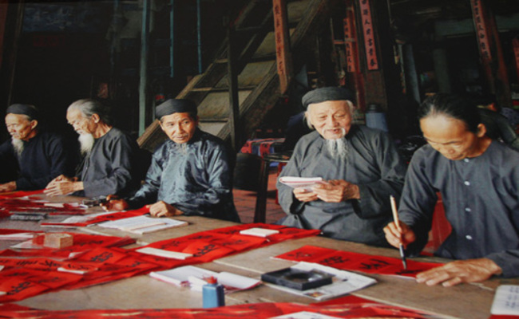

1. LỄ HỘI DINH CÔ
- Lễ hội Dinh Cô là một trong những lễ hội truyền thống của người dân tại Vũng Tàu, tỉnh Bà Rịa - Vũng
Tàu, Việt Nam. Lễ hội được tổ chức vào ngày 15 tháng Giêng âm lịch hàng năm để tưởng nhớ vị thần nữ Thủy
Long (hay còn gọi là Đình Cô), được xem là thần bảo vệ cho ngư dân và tàu thuyền trên biển.
- Lễ hội bắt đầu từ buổi sáng với các hoạt động tôn vinh vị thần như cúng tế và hành hương tại Dinh Cô.
Sau đó, lễ hội chính thức bắt đầu với các tiết mục như rước diều, chọi trâu, đua thuyền và múa lân. Các
hoạt động này thu hút đông đảo người dân và khách du lịch đến tham gia và chiêm ngưỡng.
- Trong tiết mục chọi trâu, những con trâu khỏe mạnh được trang trí đầy màu sắc và lao vào nhau trong sự
nô đùa của người dân. Đây là một trò chơi mang tính vui nhộn và cũng thể hiện lòng yêu trâu của người
dân địa phương.
- Đua thuyền cũng là một trong những hoạt động được mong chờ nhất trong lễ hội. Các đội thuyền chuyên
nghiệp và các thuyền viên địa phương sẽ cùng nhau đua trên biển, tạo nên những pha rượt đuổi đầy kịch
tính. Ngoài ra, còn có tiết mục múa lân với những chú lân múa rối đẹp mắt và bắt mắt.
- Lễ hội Dinh Cô không chỉ là dịp để người dân thể hiện lòng thành kính với vị thần bảo vệ, mà còn là
dịp để cộng đồng địa phương đoàn kết, giao lưu và tăng cường tình đoàn kết. Lễ hội đã trở thành một
trong những nét đặc trưng văn hóa của địa phương, thu hút nhiều khách du lịch tới Vũng Tàu để trải
nghiệm và khám phá.
2. LỄ HỘI ĐÌNH THẦN THẮNG TAM
- Lễ hội Đình Thần Thắng Tam là một trong những lễ hội truyền thống của người dân tại Vũng Tàu, tỉnh Bà
Rịa - Vũng Tàu, Việt Nam. Lễ hội được tổ chức vào ngày 5 tháng 5 âm lịch hàng năm, để tôn vinh những
công lao của ba vị thần là Thần Thắng Tam.
- Lễ hội bắt đầu từ buổi sáng với các hoạt động tôn vinh vị thần như cúng tế và hành hương tại Đình Thần
Thắng Tam. Sau đó, lễ hội chính thức bắt đầu với các tiết mục như diễn tài nghiên cứu, đua thuyền, chạy
thuyền, rước đèn trên sông, múa lân và múa rối.
- Trong tiết mục đua thuyền và chạy thuyền, các đội thuyền cùng nhau tranh tài trên dòng sông đầy sôi
động. Đây là một hoạt động mang tính giải trí, nhưng cũng thể hiện sự tình nguyện, tinh thần đoàn kết và
sức mạnh của con người.
- Ngoài ra, còn có tiết mục rước đèn trên sông, múa lân và múa rối. Những màn múa lân và múa rối đẹp
mắt, tinh tế và chuyên nghiệp mang đến cho khách du lịch một trải nghiệm thú vị về nét đẹp văn hóa
truyền thống của người Việt Nam.
- Lễ hội Đình Thần Thắng Tam không chỉ là dịp để người dân tôn vinh vị thần, mà còn là dịp để cộng đồng
địa phương giao lưu, gặp gỡ, tăng cường tình đoàn kết và phát triển kinh tế du lịch cho địa phương. Lễ
hội đã trở thành một trong những nét đặc trưng văn hóa của địa phương, thu hút nhiều khách du lịch tới
Vũng Tàu để trải nghiệm và khám phá.
3. LỄ HỘI MIẾU BÀ NGŨ HÀNH
- Lễ hội Miếu Bà Ngũ Hành là một trong những lễ hội truyền thống của người dân tại Vũng Tàu, tỉnh Bà Rịa
- Vũng Tàu, Việt Nam. Lễ hội diễn ra vào ngày 15 tháng 1 âm lịch hàng năm để tôn vinh nữ thần Ngũ Hành.
- Lễ hội bắt đầu từ buổi sáng với các hoạt động tôn vinh vị thần như cúng tế tại Miếu Bà Ngũ Hành. Sau
đó, lễ hội chính thức bắt đầu với các hoạt động giải trí và tín ngưỡng như múa lân, múa rồng, trống hội,
hát bội và diễn kịch.
- Múa lân và múa rồng là những tiết mục truyền thống được thể hiện bởi các đội múa. Những màn múa lân và
múa rồng đẹp mắt, tinh tế và chuyên nghiệp mang đến cho khách du lịch một trải nghiệm thú vị về nét đẹp
văn hóa truyền thống của người Việt Nam. Trống hội là một hoạt động mang tính chất giải trí, người chơi
sẽ đánh trống và múa theo điệu nhạc nhẹ nhàng.
- Ngoài ra, còn có các tiết mục tín ngưỡng như hát bội và diễn kịch, tái hiện lại các câu chuyện và
truyền thuyết về nữ thần Ngũ Hành, nhằm tôn vinh và giữ gìn các giá trị văn hóa truyền thống của địa
phương.
- Lễ hội Miếu Bà Ngũ Hành không chỉ là dịp để người dân tôn vinh vị thần, mà còn là dịp để cộng đồng địa
phương giao lưu, gặp gỡ, tăng cường tình đoàn kết và phát triển kinh tế du lịch cho địa phương. Lễ hội
đã trở thành một trong những nét đặc trưng văn hóa của địa phương, thu hút nhiều khách du lịch tới Vũng
Tàu để trải nghiệm và khám phá.
4. LỄ HỘI NGHINH ÔNG
- Lễ hội Nghinh Ngông là một trong những lễ hội truyền thống của Vũng Tàu, tỉnh Bà Rịa - Vũng Tàu, Việt
Nam. Lễ hội diễn ra vào mỗi dịp cuối năm âm lịch, tức vào khoảng tháng 8 hay tháng 9 âm lịch để tôn vinh
những vị thần bảo vệ các địa phương.
- Trong lễ hội, người dân sẽ đeo trang phục truyền thống, đánh trống và hát múa theo điệu nhạc truyền
thống. Lễ hội Nghinh Ngông cũng có các hoạt động diễn ra trên biển, như đua thuyền, đua cá và diễn tập
cứu hộ trên biển.
- Một trong những hoạt động quan trọng nhất của lễ hội Nghinh Ngông là lễ rước thần. Lễ rước thần được
tổ chức vào ngày đầu tiên của lễ hội, người dân sẽ đưa vị thần từ đền thờ về địa phương để tham gia lễ
hội. Lễ rước thần được xem là một hoạt động trang trọng, mang ý nghĩa tôn vinh vị thần và kết nối người
dân với vị thần bảo vệ địa phương.
- Lễ hội Nghinh Ngông cũng là dịp để du khách khám phá và tìm hiểu về văn hóa truyền thống của địa
phương. Du khách có thể thưởng thức những món ăn đặc sản của địa phương, tham gia các hoạt động giải trí
và tham quan các điểm du lịch nổi tiếng của Vũng Tàu như Bãi Trước, Bãi Sau, đỉnh Núi Nhỏ và Lăng Cha
Cả.
- Lễ hội Nghinh Ngông là một trong những sự kiện văn hóa truyền thống đặc sắc của Vũng Tàu, thu hút hàng
nghìn du khách đến tham gia và khám phá văn hóa địa phương.
5. LỄ HỘI TRÙNG CỬU
- Lễ hội Trùng Cửu (còn gọi là Lễ hội Thánh Mẫu) là một trong những lễ hội lớn nhất của thành phố Vũng
Tàu, tỉnh Bà Rịa - Vũng Tàu, Việt Nam. Lễ hội diễn ra vào ngày 9/9 âm lịch hàng năm để tôn vinh Thánh
Mẫu, là vị thần bảo vệ đất nước và nhân dân Việt Nam.
- Trong lễ hội, người dân và du khách sẽ cùng nhau đến chùa hoặc miếu để dâng hương và cầu nguyện cho
Thánh Mẫu. Ngoài ra, lễ hội Trùng Cửu còn có các hoạt động văn hóa truyền thống như diễn văn học, nhạc
hội, múa lân, diễu hành và triều cương.

- Hoạt động triều cương là một trong những hoạt động nổi bật nhất của lễ hội. Đó là hoạt động mang tính
tôn vinh và kính trọng đối với Thánh Mẫu, được tổ chức tại những đền thờ và miếu Thánh Mẫu trên địa bàn
thành phố. Trong đó, lễ triều cương tại Đền Thánh Mẫu Vũng Tàu là lễ triều cương lớn nhất và thu hút
đông đảo người dân và du khách đến tham gia.
- Lễ hội Trùng Cửu còn là dịp để du khách khám phá và tìm hiểu về văn hóa truyền thống của địa phương.
Du khách có thể thưởng thức những món ăn đặc sản của địa phương, tham gia các hoạt động giải trí và tham
quan các điểm du lịch nổi tiếng của Vũng Tàu như Bãi Trước, Bãi Sau, đỉnh Núi Nhỏ và Lăng Cha Cả.
- Lễ hội Trùng Cửu là một trong những sự kiện văn hóa truyền thống đặc sắc của Vũng Tàu, thu hút hàng
nghìn du khách đến tham gia và khám phá văn hóa địa phương.
6. LỄ GIỖ ĐỨC THÁNH TRẦN HƯNG ĐẠO
- Tỉnh Bà Rịa - Vũng Tàu là một trong những tỉnh thuộc miền Nam Việt Nam, nằm ở phía Đông Nam của đất
nước. Với vị trí địa lý đặc biệt, Bà Rịa - Vũng Tàu được biết đến là một trong những vùng đất đáng sống
và làm việc tốt nhất cả nước. Tỉnh này có nhiều điểm đến du lịch hấp dẫn, như biển Hồ Tràm, đồi cát Bình
Châu, đảo Côn Đảo,... Ngoài ra, Bà Rịa - Vũng Tàu còn có nhiều di sản văn hóa lịch sử quan trọng, trong
đó có Đình Thần Đức Thánh Trần Hưng Đạo.
- Đình Thần Đức Thánh Trần Hưng Đạo nằm ở huyện Châu Đức, tỉnh Bà Rịa - Vũng Tàu, được coi là nơi có
nguyên mẫu tượng Đức Thánh Trần Hưng Đạo đầu tiên được khắc. Đình Thần là một công trình kiến trúc đặc
sắc, xây dựng trên nền đất cao, gần 2m so với mặt đất xung quanh, có mái bằng đỏ rực và được trang trí
bằng những hoa văn đẹp mắt. Đây là một trong những địa điểm văn hóa, tâm linh quan trọng của tỉnh Bà Rịa
- Vũng Tàu.
- Lễ giỗ Đức Thánh Trần Hưng Đạo là một ngày lễ truyền thống của người Việt Nam, được tổ chức vào ngày
20 tháng 3 âm lịch hàng năm để tưởng nhớ về một nhân vật lịch sử quan trọng trong lịch sử dân tộc. Đức
Thánh Trần Hưng Đạo là một trong những vị tướng quân danh tiếng của lịch sử Việt Nam, ông đã đánh bại
quân xâm lược Mông Cổ và giữ vững độc lập cho đất nước. Lễ giỗ Đức Thánh Trần Hưng Đạo tại Đình Thần là
dịp để người dân Bà Rịa Vũng Tàu và các du khách tới tham dự thể hiện lòng tôn kính và tri ân đối với
ông, cầu nguyện cho sự bình an, phát triển của đất nước và cộng đồng. Lễ giỗ Đức Thánh Trần Hưng Đạo
được diễn ra trong không khí trang trọng và thiêng liêng, với các nghi thức và lễ vật đặc trưng của đạo
tràng.
- Trong ngày lễ giỗ Đức Thánh Trần Hưng Đạo tại Đình Thần, các hoạt động đặc sắc được tổ chức như lễ
dâng hương, đại lễ cúng tế, diễn văn truyền thống, hội thi văn nghệ, trình diễn võ thuật, trình diễn
trống cổ và các hoạt động tâm linh khác. Đây là dịp để cộng đồng địa phương gắn kết, giao lưu, tôn vinh
giá trị văn hóa truyền thống của dân tộc. Ngoài ra, người dân còn tham gia vào các hoạt động vui chơi,
giải trí như chơi cờ tướng, đá gà, chọi gà và thưởng thức các món ăn đặc sản của địa phương.